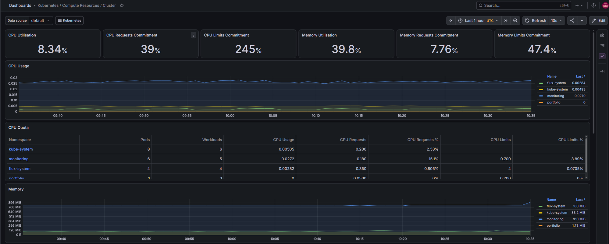

Kubernetes & cloud infrastructure — this site runs on a cluster I built and operate myself.
Two-node k3s cluster on two Oracle Cloud "Always Free" ARM instances (1 OCPU / 6GB each — the entire Ampere A1 free allotment, split across both nodes). Traefik (bundled with k3s) handles ingress and TLS termination directly via its ACME client — no cloud load balancer, no cert-manager, $0 beyond the free tier.
Most portfolio projects show a finished, working demo. This section is the opposite: the actual incidents hit while standing this cluster back up, in the order they happened, because diagnosing this kind of thing is the actual job.
--node-external-ip alone doesn't add
the public IP to the server certificate. Fixed by adding --tls-san explicitly,
and for a live cluster, by appending tls-san to
/etc/rancher/k3s/config.yaml and restarting — no need to reinstall.kubectl config view --flatten keeps the first-seen
cluster/context/user when names collide across files listed in KUBECONFIG.
A stale local entry from before the reinstall silently won over the new cluster CA.nginx, left running from an earlier
project on the same box, already owned ports 80/443. Traefik's ServiceLB daemonset
never got real traffic on that node until it was stopped.klipper-lb doesn't bind a socket. It inserts raw
iptables DNAT/FORWARD rules at pod startup. A firewall-cmd --reload
run minutes earlier (to fix the CIDR issue above) had rebuilt the ruleset and wiped those
rules out from under it. Recreating the pods reinserted them.OOMKilled. A hand-tuned 192Mi memory limit
(sized against an older Grafana release) was too tight for the current version to even
finish booting. Raised the limit and re-applied via helm upgrade.duckdns.org -
duckdns.com is an unrelated domain that resolves any subdomain, real or
invented, to its own generic parking IPs. Every check "worked" right up until the TLS
certificate came back for the wrong domain.Grafana runs in-cluster (kept off the public internet deliberately — access is via
kubectl port-forward only), fed by Prometheus scraping node and cluster metrics
every 30s.
